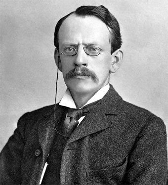

Hoy en día se sabe que el primer postulado de Dalton es falso, realmente los átomos si pueden dividirse. Las distintas partículas que surgieron cronológicamente fueron:
- El electrón, descubierto por J. J. Thomson en 1897
- El protón, descubierto por E. Rutherford en 1919
- El neutrón, descubierto por j. Chadwick en 1932
